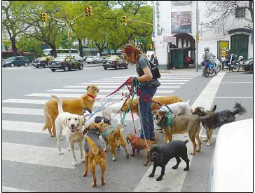

极度热爱狗狗的国家：阿根廷
阿根廷街头处处可见的“狗保姆
走在阿根廷首都布宜诺斯艾利斯的大街上，你会发现这个国家太热爱狗狗了。据说，每三个阿根廷家庭中，就会有一家养狗，其中也不乏一家养三条狗的例子。下面我们来一起了解一下这个“极度热爱狗狗的国家”，阿根廷人对于狗狗的喜爱，可真是不一般。
一、狗的地位比人高
记得刚到阿根廷时，一场小小的争执让我瞠目结舌。当时我跟朋友正坐在一家著名的连锁冰激淋店门前吃东西，一位老年顾客和店员的低声争论引起了我们的注意。“先生，您的宠物狗不能占用我们店的座椅，这是给我们顾客准备的。”这狗主人一边不顾他人诧异的眼光，将两个大大的冰激淋分别塞入端坐在他两旁客人椅上的爱狗嘴中，一边眼都不抬地对店员说：“冰激淋是买给它们吃的，所以它们也算是你们的顾客吧。”
这句话无疑引起了周围人的侧目，这位老先生爱狗没商量、把狗当孩子疼的劲头，真让我长了见识。
说到宠狗，阿根廷电视界的名人可是将其发挥到了极致。阿根廷著名电视主持人苏珊娜.希梅内斯，常常约着一群上流社会的女友上她的节目，而其中一次就是每位参与者将她们各自豢养的名犬带入节目中，评说各自的养狗之道及其经历的奢华之事。那些被打扮得花枝招展的狗儿们径自在舞台上逡巡，俨然是节目的主人。
而这也不算极致，据称苏珊娜与她的闺中密友们常常在一家私人豪华餐厅聚会，之所以选定这家，是因为餐厅专门为她们的狗儿制作了宠物饭桌和休息间。席间，各自的狗儿蹲坐在椅子上，由专人伺候用饭，与主人们隔桌相望，对狗的这种宠法真让人大开眼界。
二、大笔开支不含糊
养狗不光需要投入感情，金钱也是至关重要一环，在阿根廷一只狗一生需要花钱办理的手续一点不比人简单。
根据阿政府有关规定，宠物们从出生之日起，注册户口、办理卫生证件等手续异常繁杂，此外各种门类的疫苗注射个不停，从狂犬疫苗到预防体内寄生虫的注射针剂，从防跳蚤和体外寄生虫的喷剂和药片等等，不一而足，加上生病时的治疗费和医药费，花费堪称惊人。而随着狗狗的成长，还有价格不菲的狗粮、洗浴用的香波和护发素、遛狗用的专用链、冬天的小衣服，从小到大的玩具等等，更奢华的甚而包括给狗儿的美容和臭美装扮。据朋友讲，仅这些日常开支，粗粗一算每个月至少也要达到70美元左右。
而开支的大项还有“有偿遛狗”。一般养狗人家并没有专门的闲人能应狗儿的要求，把它们随时拉出去遛，但把狗完全圈在家里，不仅自己不忍心，就连邻居都会投诉你不人道，因此在阿根廷应运而生一种职业——狗保姆或者狗专车。
狗保姆的职责就是每天早上准时到每家每户接狗，按照固定的路线将他们带到公园等开阔地放开，还得按不同狗品种给他们合理安排活动量，其间还得招呼狗粮和水，最后在狗主人下班后将他们一一送回，因此布市街头最有特色的人文景观便是腰系一堆狗链、与群狗同行的狗保姆。可别小看这个工作，他们也要取得专业证书，而且也接受市政管理。
狗专车基本也承担类似职责，唯一的不同就是以车代步，而那些专车无不花花绿绿，上面写着“疼爱你的狗，就让它们参加我们的太平洋之旅”之类的广告词，很是引人注目。“有偿遛狗”这项支出一般达到每年50美元左右。这两项合起来，一只普通狗的花费每月至少120美元。